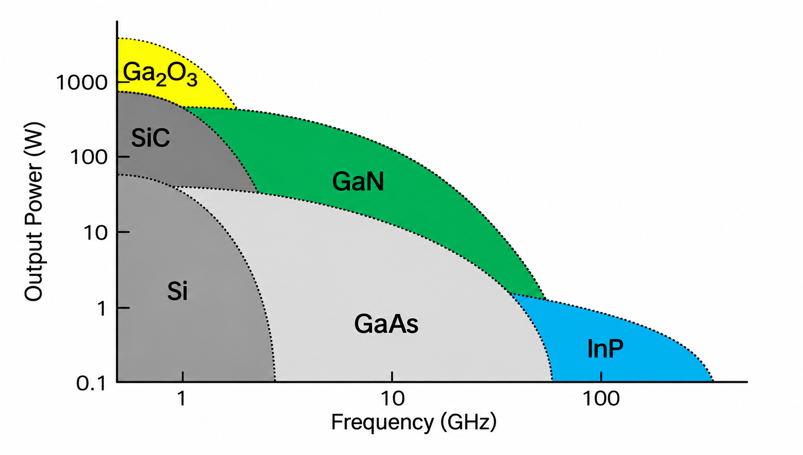
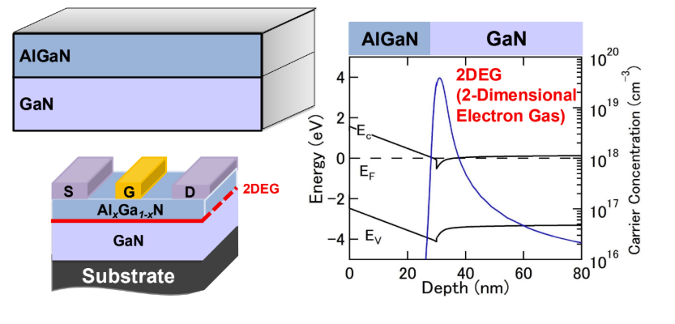
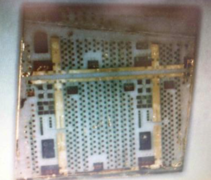
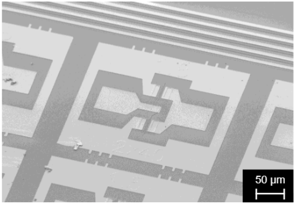
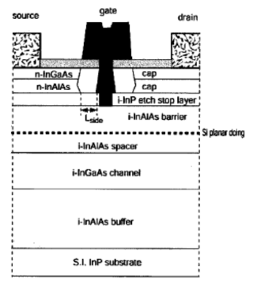

Predictive Device Design
Based on the physics of polarization in GaN, we aim to establish theoretical frameworks capable of predicting device characteristics such as threshold voltage.
Research
Our vision
Compound semiconductors such as GaAs, InP, GaN, and Ga₂O₃ have unique advantages, including high electron mobility and wide bandgaps. By engineering heterostructures—stacks of different materials in which carriers form at the interfaces—we seek to unlock superior performance for high-frequency, low-noise, and high-power applications.

Physical properties of semiconductor materials
Interfaces, polarization, and carriers
Transistor design and characterization
Integrated-circuit applications, including high-frequency and logic circuits
01 / GaN HEMT
In AlGaN/GaN heterostructures, the difference in polarization between the two materials induces a polarization charge at the interface, forming a high-density two-dimensional electron gas (2DEG). Its high electron mobility makes it well suited to high-frequency amplifiers.
Toward high-frequency amplifier applications
Toward high-voltage switching-device applications
Toward logic-device applications
Extending GaN HEMTs, which have primarily been developed for high-frequency and high-voltage applications, to logic represents an important next step. Our laboratory investigates threshold-voltage prediction, process technologies for N-polar GaN, and current waveform analysis of current collapse, with the goal of achieving both high performance and reliability.


02 / InP HEMT
InP-based HEMTs employ material systems with room-temperature electron mobilities exceeding 10,000 cm²/V·s. By exploiting their extremely high-speed electron transport, we aim to realize amplifiers operating in the mmWave and THz ranges, as well as low-noise, high-frequency devices.
Toward high-frequency and low-noise performance
Toward high-frequency amplifier applications
Toward quantum-computing hardware


03 / Ga₂O₃
Ga₂O₃ is an ultra-wide-bandgap semiconductor.
Material properties suitable for high-power applications
Utilizing a novel growth method developed at Tohoku University
From crystal characterization to device applications
In collaboration with Prof. Akira Yoshikawa of the Institute for Materials Research, Tohoku University, and FOX Corporation, we are exploring technologies based on crystals grown without precious-metal crucibles, with the goal of realizing low-cost microwave transistors.

Outlook
Based on the physics of polarization in GaN, we aim to establish theoretical frameworks capable of predicting device characteristics such as threshold voltage.
We seek to extend InP heterostructure devices to amplifiers operating in the mmWave and THz frequency ranges, as well as low-noise amplifiers for cryogenic environments.
Through electrical characterization, we aim to contribute to improving the quality of Ga₂O₃ crystals and ultimately enable microwave applications.